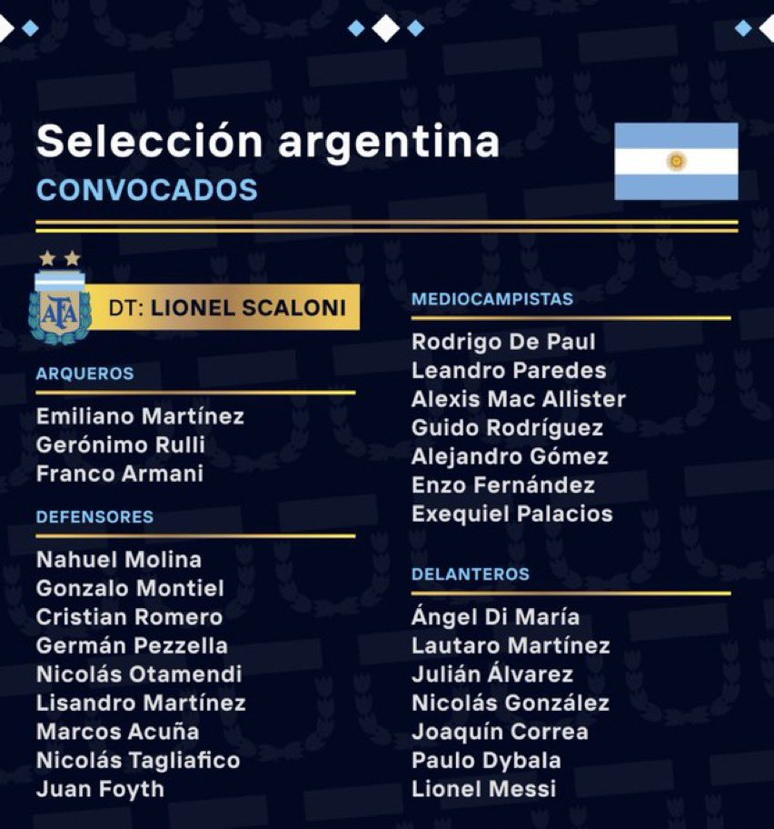
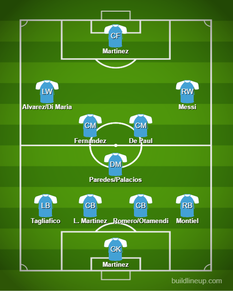

Squad Reaction - Argentina

Alright. Copa America winners. Winners of the Finallissima. Their team looks amazing actually. I genuinely hope they do another 2014. In goal, Emi Martinez is a lock-in. In defense, Lisandro Martinez should definitely play after his amazing start at United. Alongside him, Romero or Otamendi should be good enough. In the fullback positions, I would perhaps go Tagliafico and Montiel. In midfield, Paredes or Palacios for the CDM role. Ahead of him, De Paul is for sure to start. I feel beside him I would trust Enzo Fernandez ahead of Papu Gomez. On the wings, Di Maria or Alvarez for LW and Messi at RW. Dybala was said to be missing the WC but he has been picked in the squad. I don’t know if he will play but it would be nice to see him in the as soon as possible. In ST, Lautaro Martinez is for sure on lock there. He has been amazing for Argentina so far and he will be crucial for them in this WC.
The lineup:
